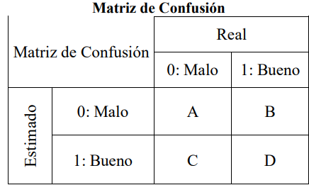
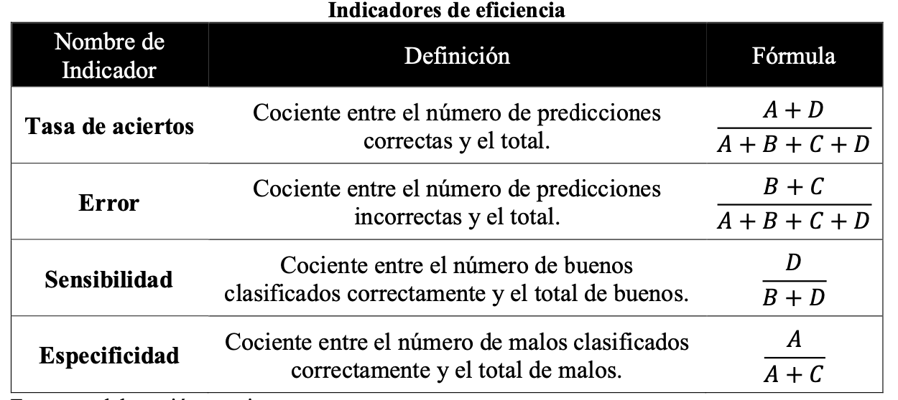

2 Conceptos del Proceso de Modelización
Para la construcción de los modelos scoring, ya sea con el uso de regresión logística o redes neuronales, es necesario definir algunos conceptos.
2.1 Prueba Dickey - Fuller aumentada
La prueba de Dickey - Fuller aumentada permite corroborar la estacionariedad de una serie de tiempo. Cuando una serie no estacionaria presenta al menos una raíz unitaria, por lo que se busca contrastar la siguiente hipótesis (Santos 2008):
\(H_0:\) la serie tiene raíz unitaria
\(H_a:\) la serie es estacionaria
Se rechaza \(H_0\) si:
Valor absoluto (Estadístico de la prueba (ADF)) \(>\) valores críticos de la prueba \((1\%, 5\%, 10\%)\).
2.2 Muestreo Aleatorio Simple
El tamaño de muestra es necesario para estimar \(p\) (proporción poblacional) con un límite para el error de estimación \(B\), está dado por (Scheaffer 2013):
\[ n = \frac{Npq}{(N - 1)D + pq} ~ donde: ~ q = 1 - p ~ y ~ D = \frac{B^2}{4} \]
2.3 Roll Rate
Implica comparar el peor atraso en un \(X\) número de meses, con los posteriores \(X\) meses. Y así, calcular el porcentaje de operaciones o clientes que mantienen, mejoran o empeoran su comportamiento, en distintos rangos de atraso. El propósito es identificar el punto de no retorno: es decir, el nivel de atraso en el cual, una operación es considerada como insalvable (Siddiqi 2006).
2.4 Valor de Información (IV)
El valor de información es un valor numérico que permite cuantificar el poder de predicción de una variable independiente. El mismo, funciona con variables categóricas. Se calcula a partir de la siguiente expresión:
\[ IV = \sum_{i=1}^n \left(\begin{array}{c}\frac{b_i}{b} - \frac{m_i}{m}\end{array}\right) \times \ln \left(\begin{array}{c}\frac{b_i/b}{m_i/m}\end{array}\right) \]
Donde, \(n\) es el número de categorías en la variable independiente, \(b_i\) y \(m_i\) es el número de buenos y malos clientes dentro de la categoría \(i\). Y \(b\) y \(m\): el número total de buenos y malos clientes en el periodo de modelo, respectivamente.
Intuitivamente, mientras más grande sea el valor de IV, más predictiva será la variable independiente categorizada. Sin embargo, las variables con valores superiores a 0.5 deberían ser revisadas pues puede darse el caso de sobreestimación (Siddiqi 2006).
Una regla propuesta por (Siddiqi 2006)
| Valor IV | Nivel de Predicción |
|---|---|
| \(IV < 0.02\) | No predictivo |
| \(0.02 ≤ IV ≤ 0.1\) | Débil |
| \(0.1 ≤ IV ≤ 0.3\) | Medio |
| \(IV > 0.3\) | Fuerte |
2.5 Backward Stepwise y Criterio de Información de Akaike (AIC)
La técnica de pasos hacia atras (Backward Stepwise) consiste en introducir en el modelo todas las variables e ir excluyendo una tras otra según algún criterio de evaluación (Moral 2006). En este caso, se utiliza el AIC como críterio de selección de variables, considerando aquellas que logren el menor valor de AIC.
El criterio de información de Akaike penaliza los modelos con muchos parámetros y busca determinar la significancia de incluir algunos parámetros en el modelo (Sanchez 2012). Este criterio se define como sigue:
Para un conjunto de \(m\) modelos, de tal forma que,
\[ M_j^m \supset M_{j-1}^{m-1} \supset . . . \supset M_{j-i}^1 \]
Donde, \(j > i\), \(i > 0\) y los subíndices denotan el número de variables en cada modelo. Se busca elegir aquel valor de \(j\) que minimice la siguiente expresión,
\[ AIC = -2\log L + 2k \]
Siendo, \(L\) es la función de máxima verosimilitud, que se define como:
\[ L = -\frac{n}{2}\log 2\pi - \frac{n}{2}\log \sigma^2 - \frac{1}{2}\sum_{t=1}^n \frac{e_t^2}{\sigma^2} \]
Donde, \(k\) es igual al número de parámetros del modelo, \(n\) corresponde al número de datos para la construcción de este y \(\sigma^2\) el promedio de los residuales \(e_t\) al cuadrado. Como se puede observar, AIC penaliza modelos según su desviación de los datos reales, siendo el mejor modelo aque que manifieste el valor más pequeño entre todos los modelos evaluados, siendo este el que mejor ajusta a los datos (Sanchez 2012).
2.6 Estadístico de Wald
Para corroborar la significancia de los coeficientes de un modelo logit, se contrasta la siguiente hipótesis nula:
\[ H_0: \beta_i = 0 \]Considerando a \(\beta_i\) como el coeficiente estimado correspondiente a la variable independient \(x_i\).
Así, se cuenta con el estadístico de Wald (Wasserman 2010): Sea \(\theta\) un parámetro escalar, \(\hat{\theta}\) un estimador de \(\theta\) y sea \(\hat{se}\) el error estándar estimado de \(\hat{\theta}\). Considerar probar \(H_0: \theta = \theta_0\) vs \(H_1: \theta ≠ \theta_0\). Se asume que \(\hat{\theta}\) es asintoticamente normal,
\[ \frac{\sqrt{n}(\hat{\theta} - \theta_0)}{\hat{se}} \longrightarrow N(0,1) \]
Con un nivel de significancia de \(\alpha\), la prueba de Wald establece: Se rechaza \(H_0\) cuando \(|W| > z_{\alpha/2}\) donde,
\[ W = \frac{\hat{\theta} - \theta_0}{\hat{se}} \]
En este caso, \(\theta_0 = 0\), por lo cual el estadístico de Wald se simplifica a
\[ W = \frac{\hat{\beta}}{\hat{se}} \]
2.7 GVIF: Factor de inflación de la varianza generalizado
GVIF es una medida de cuanto de la varianza del coeficiente estimado \(\beta_j\) está inflado por la existencia de correlación entre las variables independientes del modelo. Se usa comúnmente cuando se tiene variables categóricas con más de dos valores posibles o con variables polinomiales (Fox 2003), está dado por,
\[ GVIF_i = \frac{\det R_i \times \det R_{-i}}{\det R} \]
Siendo \(\det R_i\) el determinante de la matriz de correlación sobre las columnas de la variable \(i\), \(\det R_{-i}\) el determinante de la matriz de correlación sobre las columnas del resto de variables del modelo, distintas a la variable \(i\) y \(\det R\) el determinante de la matriz completa de correlación. Cuando el número de coeficientes de cada variable es uno, el GVIF coincide con VIF (factor de inflación de la varianza $1/(1-R_i^2), siendo ~ \(R^2\) ~ el ~ coeficiente ~ de ~ determinacón)$. A pesar, de no tener una regla formal, generalmente se acepta que valores de GVIF superiores a 10 puede ser perjudicial (Yoo 2014).
2.8 Estadístico de Kolmogorov - Smirnov (KS)
El estadístico de Kolmogorov Smirnov consiste en medir cuan distintas son las funciones de distribución de buenos y malos clientes para cada valor de puntaje score.
El valor del estadístico está dado por (Rezac 2011),
\[ KS = \max\left(\begin{array}{c}P_b(i) - P_g(i)\end{array}\right) \]
Donde:
\(\textbf{i}:\) es el valor de score, en el rango \(L - H\), que es, \(L ≤ i ≤ H\).
\(\textbf{P}_\textbf{g}(\textbf{i})\), \(\textbf{P}_\textbf{b}(\textbf{i}):\) Proporción de buenos y malos con score menor o igual a \(i\), en la población.
\[ P_g(i) = \frac{N_g(i)}{N_g} = \sum_{j = L}^i p_g(j) \]
\[ P_b(i) = \frac{N_b(i)}{N_b} = \sum_{j = L}^i p_b(j) \]
Con:
\(N_g:\) El total de buenos en la población.
\(N_b:\) El total de malos en la población.
\(N_g(i), N_b(i):\) El número de buenos y malos en la población con scores menores o iguales a \(i\).
\[ N_g(i) = \sum_{j = L}^{i} n_g(j) \]
\[ N_b(i) = \sum_{j=L}^i n_b(j) \]
\(p_g(i), p_b(i):\) Es la proporción de buenos con score \(i\) y malos con score \(i\) en la población.
\[ p_g(i) = \frac{n_g(i)}{N_g}\hspace{1cm} \frac{n_b(i)}{N_b} \]
Finalmente, \(n_g(i)\) y \(n_b(i)\) el número de buenos casos y malos con score \(i\), en una población.
El estadístico puede ser usado para medir la capacidad de clasificiación de un modelo, tomando valores entre 0 y 1. Se considera que un modelo con un KS menor a 20% debe ser cuestionado y mayor a 70% sea, probablemente, muy bueno para ser cierto.
2.9 Coeficiente de GINI
El coeficiente de GINI es un estadístico usado para medir cuan bien el modelo scoring distingue entre los buenos y malos clientes, toma valores entre 0 y 1, considerando que, si el coeficiente de Gini es igual a 1, entonces el modelo separa perfectamente a bueno y malos.
El estadístico está dado por la siguiente ecuación:
\[ Gini = 1 - \sum_{i = L}^{H^{\prime}} \left(\begin{array}{c}P_b(i+1) - P_b(i)\end{array}\right)\left(\begin{array}{c}P_g(i+1) + P_g(i)\end{array}\right) \]
Donde:
\(\textbf{i}:\) es el valor de score, en el rango \(L - H\), que es, \(L ≤ i ≤ H\).
\(\textbf{P}_\textbf{g}(\textbf{i}), \textbf{P}_\textbf{b}(\textbf{i}):\) Proporción de buenos y malos con score menor o igual a \(i\), en la población, respectivamente.
Se considera que para modelos de originación, un coeficiente de Gini menor a 35% es sospechoso y mayor a 50% es más que satisfactorio.
2.10 Matriz de confusión: error, sensibilidad y especificidad
Una forma simple de evaluar la predictividad de un modelo, es calculando el porcentaje de clientes que este clasifica de forma correcta. Este porcentaje de clasificación es derivado, de la matriz de confusión, la cual es construida de la siguiente forma:
Elegir un punto de corte, para los valores de score obtenidos.
Clasificar a todas las operaciones o clientes con un valor de score por debajo del punto de corte, como malos esperados. Y a los que tiene un valor de score por encima del punto de corte, como buenos esperados.
Construir una tabla cruzada entre la clasificación real u original de bueno/malo y la de bueno/malo esperado, obtenida en el paso anterior.
Calcular las diferentes ratios que pueden ser obtenidos del modelo, como error, valor de sensibilidad y especificidad.
Los casos correctamente clasificados son denominados como verdaderos positivos (buenos) y verdaderos negativos (malos). Si no son bien clasificados se tiene a los falsos positivos (malos que son clasificados como buenos) y a los falsos negativos (buenos que son clasificados como malos).
Además, se define como sensibilidad y especificidad, a la habilidad del modelo de catalogar correctamente al cliente bueno y malo, respectivamente. La forma general de la matriz de confusión es mostrada en la siguiente tabla:

Y en la siguiente tabla se expone los indicadores de eficiencia, que serán usados para comparar los modelos desarrollados, construidos a partir de la matriz de confusión.

Una forma de obtener el punto de corte que permita nivelar la predicción correcta de buenos y malos es hacer uso del índice de Youden, que está dado por:
\[ indice~de~Youden(YI) = \max(Sensibilidad + Especificidad - 1) \]
En una curva ROC, que será definida en el siguiente apartado, el índice de Youden es la distancia vertical máxima ente la curva y la diagonal. Siendo el punto de corte óptimo, aquel en el cual se alcanza el valor de YI (Cadarso Suárez 2010) .
2.11 Estadístico AUROC
Es una medida de performance cercanamente relacionada al coeficiente Gini y midel el área entre la curva y la diagonal conformada en la gráfica de sensibilidad vs (1 - especificidad), comúnmente llamada Curva ROC, para el total de los valores de probabilidad. Permite medir la eficacia predictiva de un modelo, evaluando gráficamente la capacidad de este para discriminar entre buenos y malos.
La relación entre el estadístico AUROC y el coeficiente de Gini es el que se muestra a continuación Till (2001)
\[ AUROC = \frac{Gini + 1}{2} \]
El valor de AUROC varía entre 0 y 1. Un valor de 0.5 implicaría que el modelo es igual a hacer una clasificación aleatoria para catalogar a un cliente como bueno o malo, un valor de 1 significa que las clasificaciones son perfectamente correctas y un valor de 0 implica que las mismas son totalmente incorrectas. Tal como expresa (Siddiqi 2006) el valor del estadístico AUROC deber estar entre 0.5, y un valor superior a 0.7 se considera adecuado.